La página de la organización es ajedrez-integral.com/centroamericano-mesas.html. Se abre en la computadora del árbitro principal (o de quien organiza) y desde ahí se prepara y se sigue todo el campeonato.
Quién entra
Hace falta una cuenta de Ajedrez Integral con la licencia de la mesa del árbitro. Sin ella, la página dice «Esta página es de la organización» y ofrece «Activar o pedir una licencia».
Cada evento tiene dueño y equipo: solo lo ven quien lo creó y las personas de su equipo. Eso lo controla la base de datos, no la pantalla.
Los árbitros adjuntos no necesitan cuenta: entran a su tableta con un QR o un código (segunda parte).
La ventana abierta. Los pedidos de ayuda y los avisos de los adjuntos llegan a esta página. No suenan: hay que tenerla abierta durante la ronda y mirarla.
Las once pestañas
Arriba están las pestañas, en el orden en que se usan durante la ronda:
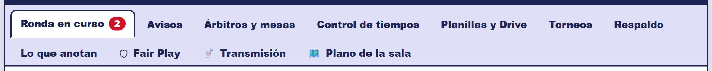
Ronda en curso (con los pedidos abiertos), Avisos, Árbitros y mesas, Control de tiempos, Planillas y Drive, Torneos, Respaldo, Lo que anotan, Fair Play, Transmisión y Plano de la sala.
Abajo, una barra resume el estado del evento: cuántos avisos de los árbitros están abiertos, cuántos árbitros están conectados, la clave de chess-results, el Drive y la última copia. Ahí está también el Modo ensayo, que muestra solo los torneos de prueba para practicar sin tocar los de verdad.
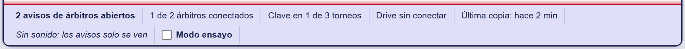
La barra de estado, siempre a la vista.
El orden de trabajo. Antes del evento: Torneos → Árbitros y mesas → Plano de la sala. Durante cada ronda: Ronda en curso, Avisos y Control de tiempos. Al terminar: Planillas y Drive, Lo que anotan y el informe final. Fair Play y Transmisión corren en paralelo.
Antes del evento · Paso 1
Torneos: de dónde salen las mesas
La pestaña Torneos dice de dónde lee la mesa del árbitro los emparejamientos de cada categoría. Hay dos fuentes:
Pareo Integral: los torneos que están en Pareo Integral en esta misma computadora aparecen en la lista con su botón «Vincular». El torneo tiene que estar publicado. Al vincularlo, los resultados que anotan los adjuntos le llegan al Pareo Integral del principal, que los acepta.
chess-results: los torneos del campeonato van ligados en un grupo, así que basta una sola clave para todos: el código del grupo y la clave (SID) de Swiss-Manager. Con «Probar y guardar la clave» se comprueba contra chess-results y se guarda cifrada: nadie la vuelve a ver, ni la organización.
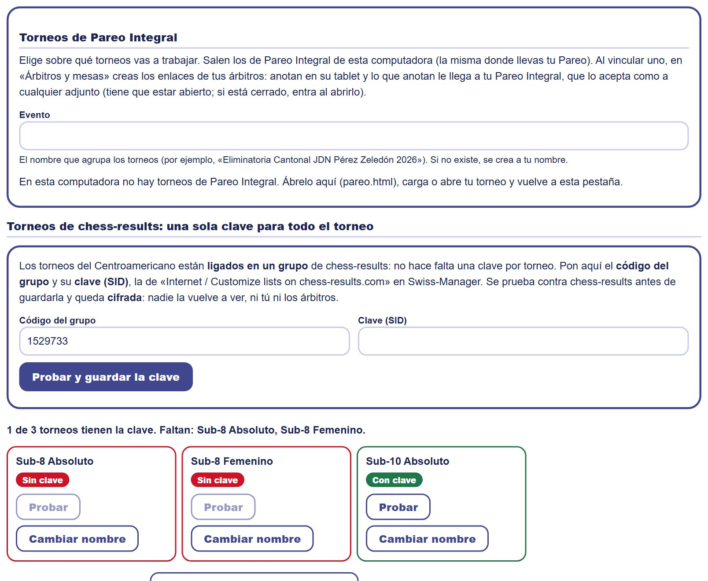
Torneos: los de Pareo Integral arriba y, debajo, la clave del grupo de chess-results y el estado de cada categoría (con clave o sin clave).
Debajo de las categorías hay tres cosas más:
Otras claves, para un torneo que no esté en el grupo.
Los tableros electrónicos por LiveChess: se pega la tabla con el enlace de cada categoría. Con eso, la tableta de cada adjunto ve sus partidas sin atraso, el control de tiempos se llena solo y se avisa la triple repetición apenas pasa.
La transmisión sin atraso para los árbitros (una transmisión privada de Lichess), en tres pasos numerados.
Cómo lee chess-results. La página lee chess-results una sola vez para todos, cada 40 segundos. Si chess-results se cae, las tabletas siguen con la última copia (hasta de 30 minutos) y lo dicen: «estas mesas son de las HH:MM». Guardar un resultado siempre vuelve a leer, para no anotar sobre una mesa vieja.
Antes del evento · Paso 2
Árbitros y mesas: un enlace y un QR por árbitro
Cada árbitro adjunto recibe un enlace con su QR para un torneo y un rango de mesas. Lo abre en su tableta y desde ahí anota solo sus mesas: el servidor no le deja tocar ninguna otra.
Toca Nuevo árbitro. Si ya tiene mesas en otra categoría, elígelo en «¿Es un árbitro que ya tiene mesas en otro torneo?»: queda un solo QR para todas.
Escribe su nombre (o déjalo vacío: queda «Árbitro 1», «Árbitro 2»… y él lo escribe la primera vez que entra), el torneo, Mesa desde y Mesa hasta.
Elige cuándo vence el enlace (el día que elijas, al terminar el torneo, esta noche o dentro de 12 horas) y toca Crear el enlace y el QR.
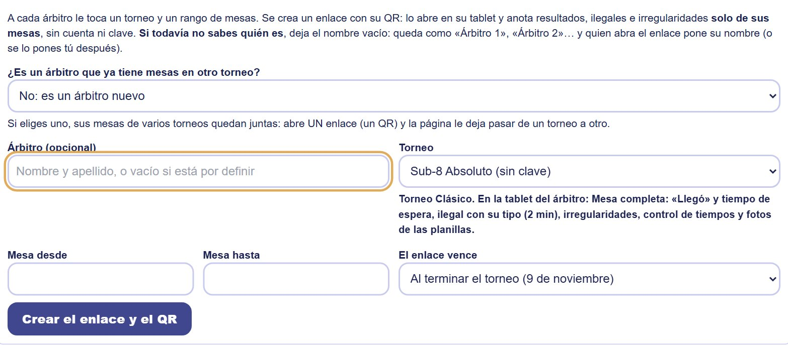
Un árbitro nuevo: su nombre, el torneo, sus mesas y cuándo vence el enlace.
Para no hacerlo de uno en uno, Repartir las mesas toma el número de mesas de la categoría (o las lee de chess-results) y el número de árbitros, y crea todos los enlaces repartidos. Imprimir los QR los saca en papel, uno por árbitro.
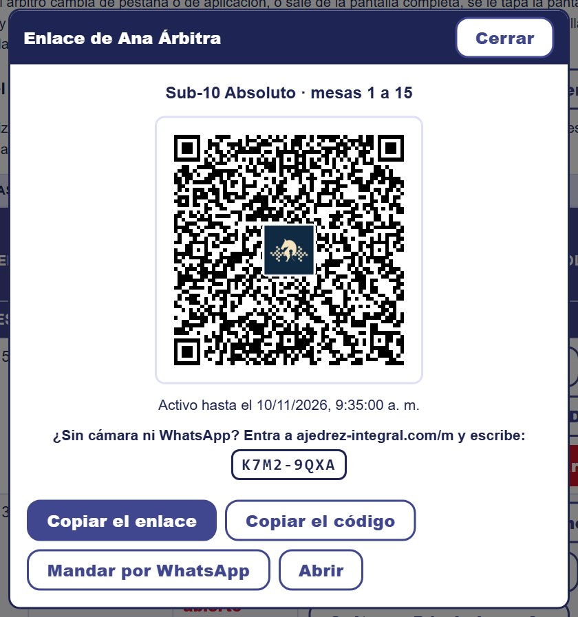
El QR de un árbitro, con su código de 8 letras para quien no puede abrir el QR: se escribe en ajedrez-integral.com/m.
Antes del evento · Paso 2 (continuación)
La tabla de enlaces y los interruptores de todas las tabletas
Debajo están los enlaces creados, agrupados por ritmo y por torneo. Cada fila dice el árbitro, su código, sus mesas, hasta cuándo vale, si está conectado y si tiene avisos abiertos. Sus botones:
Botón
Para qué
QR y enlace
Ver el QR, copiar el enlace o el código, mandarlo por WhatsApp.
Nombre / Mesas
Cambiar el nombre o el rango de mesas, sin crear otro QR.
Avisarle
Un aviso solo para ese árbitro.
Otro torneo
Sumarle mesas de otra categoría con el mismo QR.
Concentración
Encender el modo concentración en su tableta.
Apagar / Quitar
Apagar el enlace (se puede volver a encender) o quitarlo.
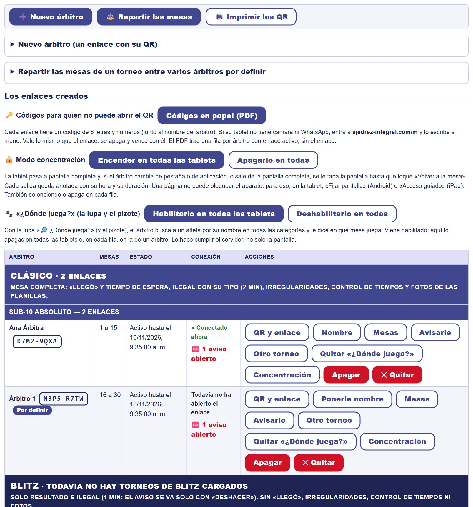
Árbitros y mesas: los botones de arriba, los interruptores de todas las tabletas y la tabla de enlaces.
Códigos en papel (PDF): los códigos de 8 letras de todos, para quien no tiene cámara ni WhatsApp.
Modo concentración: la tableta pasa a pantalla completa y, si el árbitro cambia de pestaña o de aplicación, se tapa hasta que toque «Volver a la mesa».
«¿Dónde juega?»: la lupa con la que cada árbitro busca la mesa de cualquier jugador de todas las categorías.
Antes del evento · Paso 3
El plano de la sala
La pestaña Plano de la sala dibuja la sala con sus filas y sus mesas, categoría por categoría. Es el plano que ven las familias en la página del torneo y cada jugador en su tarjeta.
Toca Armar el borrador con los torneos: la página arma las filas con las mesas de cada categoría.
Escribe qué hay adelante (la fila 1) y qué hay al fondo, para que el plano se entienda en la sala.
En Medidas del salón y material pon el largo y el ancho: la página calcula cuántas mesas, sillas, tableros, piezas, relojes y planillas hacen falta, y cuántos árbitros.
Revisa, corrige una mesa tocándola en el dibujo y toca Guardar el plano.
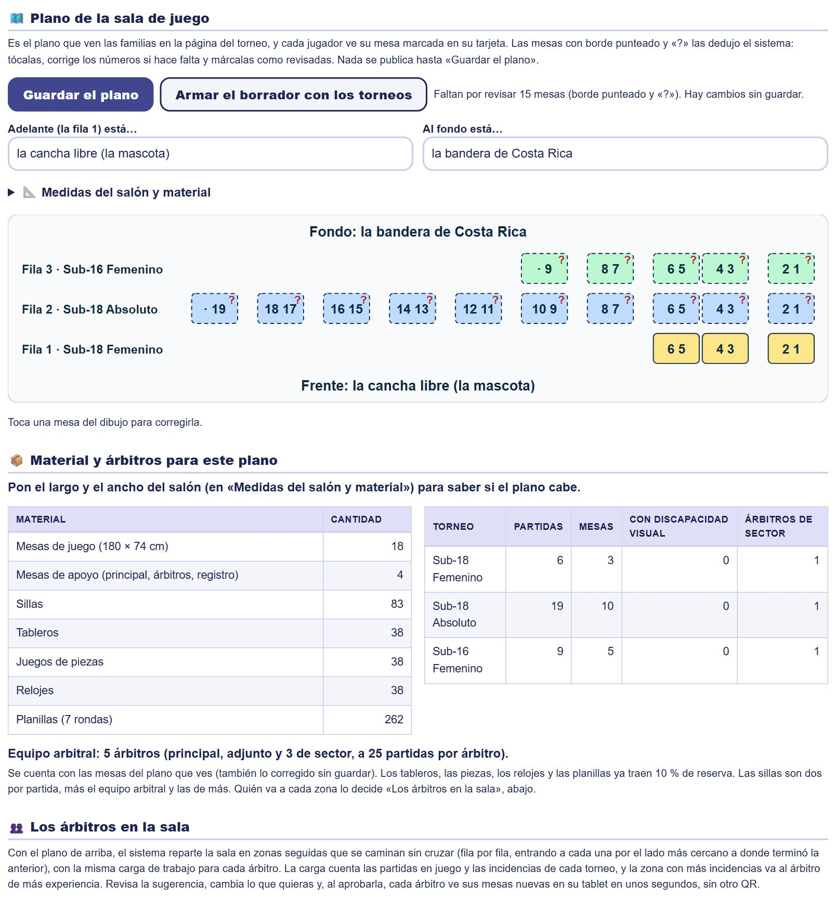
El borrador del plano, con las mesas de cada categoría, el material y el equipo arbitral que hace falta.
Los árbitros en la sala. Con el plano listo, «Analizar la sala y sugerir el reparto» propone qué mesas le tocan a cada árbitro según dónde quedan en la sala. Nada cambia hasta que el principal toca «Aprobar y cambiar las mesas de los árbitros»; entonces las tabletas cambian solas, sin un QR nuevo.
Durante la ronda
Ronda en curso: la sala entera en una pantalla
Es la pestaña que el principal mira durante toda la ronda. De arriba abajo:
Cuándo inició la ronda cada categoría: lo marca el árbitro de cada categoría en su tableta, y desde esa hora corre el tiempo de espera.
Actualizar desde chess-results (o desde Pareo Integral), Reporte de la ronda (PDF) y Hojas en papel (plan B), por si se cae todo.
Cuánto le queda a cada árbitro: sus mesas, una barra de avance, cuántas le quedan, su estado (en curso, terminó), la presencia de los jugadores y si está conectado.
Jugadores que no han llegado, con la hora en que se marcó y el tiempo de espera. Cuando se cumple, la página lo dice en rojo para avisarle al árbitro de esa mesa.
Pedidos de ayuda y avisos de los árbitros, que se ponen al día cada pocos segundos, con sus botones: Atendido, Escribir y, cuando un árbitro terminó sus mesas, Mandar esta sugerencia, que propone a quién podría ir a ayudar (no reasigna nada sola).
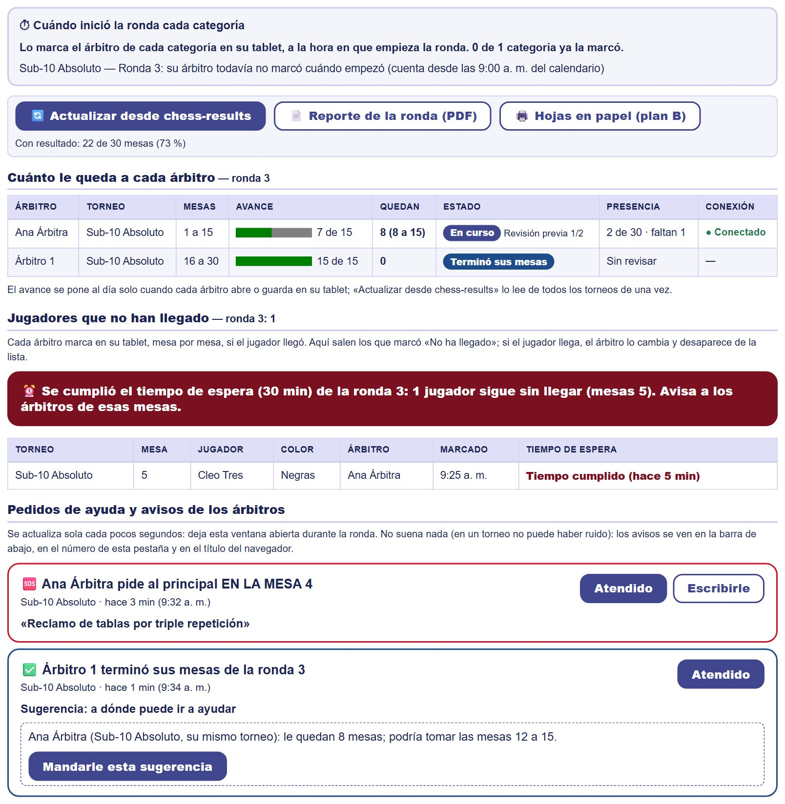
La ronda 3: el avance de cada árbitro, una jugadora que no llegó con el tiempo de espera cumplido y dos avisos de los árbitros.
Leyes 2023 · art. 6.7
El tiempo de espera lo fijan las bases (en el ejemplo, 30 minutos desde el inicio de la ronda). Quien no llega dentro de ese tiempo pierde la partida, salvo que las bases o el árbitro digan otra cosa. La página avisa y propone el resultado; lo declara el árbitro.
Durante la ronda
Avisos y control de tiempos
Avisos
Un aviso le aparece al árbitro arriba de su pantalla, con una vibración, y se queda hasta que toque «Entendido». La organización sabe quién lo leyó.
En Para, elige a todos los árbitros, a los de un torneo o a uno solo.
Escribe el mensaje, o toca una frase rápida: «Ya empieza la ronda: a sus mesas.», «Pausa de 10 minutos.», «Revisen que cada mesa tenga su resultado guardado.»
Toca Enviar el aviso. En Avisos enviados, la columna «Lo leyeron» dice cuántos lo vieron y quién falta.
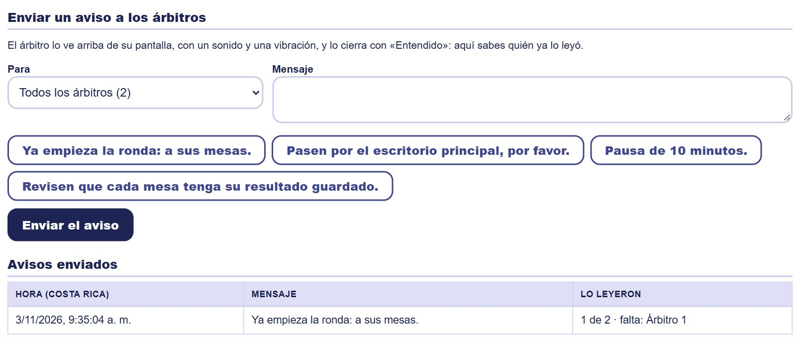
Un aviso enviado a todos: lo leyó 1 de 2.
Control de tiempos
Con Pedir un control de tiempos, a cada árbitro (o a uno) se le abre en la tableta una ventana para anotar, en cada partida sin terminar, el tiempo de los dos relojes y las jugadas hechas. Las lecturas no se borran y quedan también en la bitácora. Con LiveChess conectado, el control se llena solo.
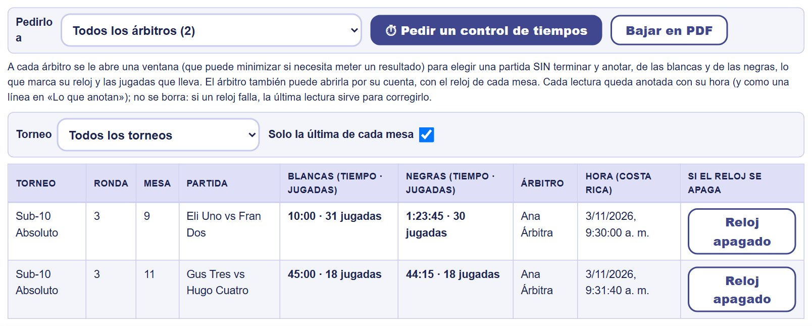
Las lecturas del control de tiempos, mesa por mesa, con la hora de cada una.
Leyes 2023 · art. 6.10
Si un reloj se apaga o falla, el árbitro lo cambia y fija los tiempos con su mejor criterio. El botón Reloj apagado de cada fila abre una calculadora que propone el tiempo de cada jugador a partir de la última lectura; el árbitro decide y se lo manda al adjunto. Por eso conviene pedir controles de tiempo durante la ronda.
Lo que queda del torneo
Planillas, lo que anotan y el respaldo
Planillas y Drive
Al terminar cada partida, el árbitro saca en su tableta una foto de las dos planillas juntas. Las fotos se guardan primero en un lugar privado y se pasan a una carpeta de Google Drive del evento. La tabla dice de cada una el torneo, la ronda, la mesa, la partida, quién la subió y si ya está en el Drive; con «Ver» se abre y con «Generar PGN» se arma la partida (de la transmisión, si el tablero se transmitió, o leyendo la foto).
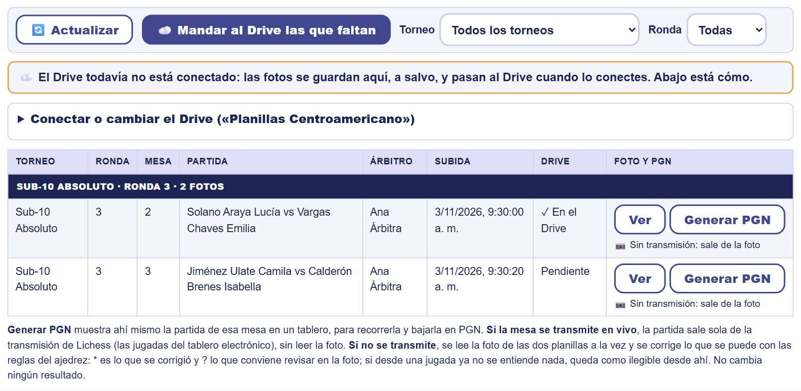
Las planillas de la ronda 3: una ya está en el Drive y otra pendiente.
Lo que anotan
Todo lo que hacen los árbitros queda en el registro: resultados, ilegales, irregularidades, quién llegó, quién se levantó, fotos de planillas, controles de tiempo, pedidos de ayuda. Se filtra por torneo, por árbitro y por tipo, y se baja en PDF. Una tabla aparte reúne a los jugadores con ilegales, irregularidades o que se levantaron. El Informe final en PDF es el del evento.
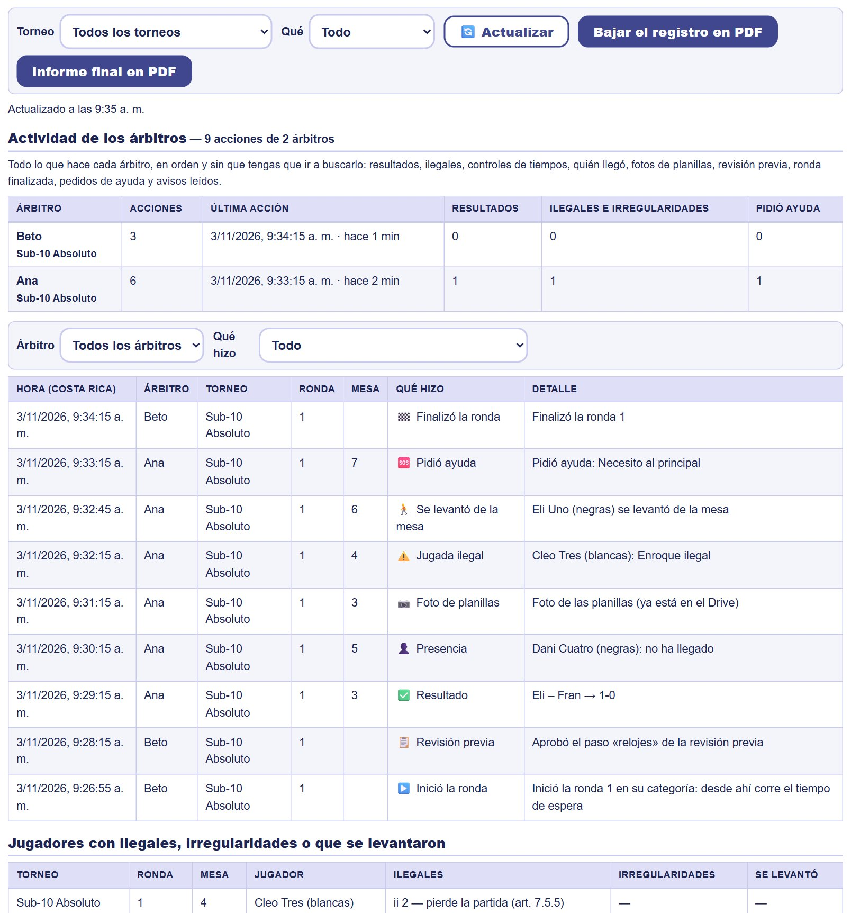
La actividad de los árbitros, acción por acción, y los jugadores con ilegales.
Respaldo. La página guarda una copia cada 5 minutos si algo cambió, guarda las copias de cada hora por 3 días y manda una al Drive cada 10 minutos. Con «Hacer una copia ahora y bajarla» se baja a mano. Restaurar solo agrega lo que falta: nunca pisa lo que ya está. La clave de chess-results no va en la copia.
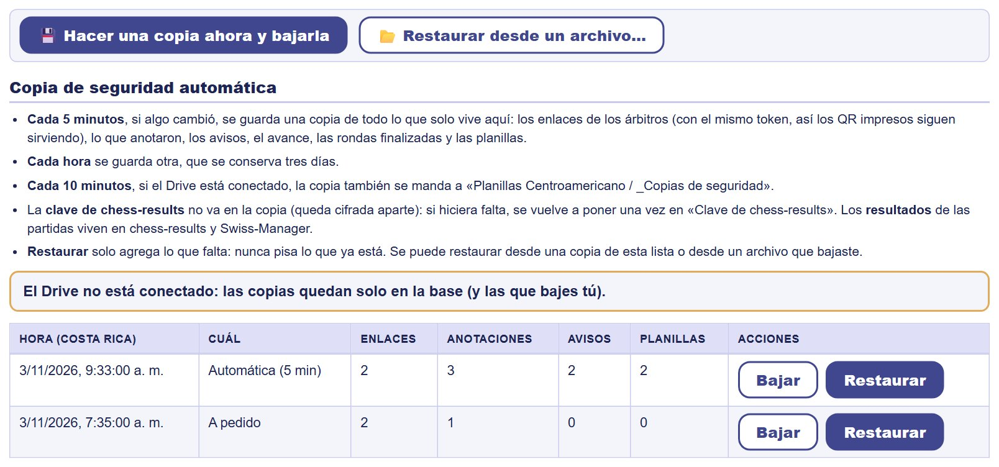
Las copias de seguridad del evento.
En paralelo
Fair Play y transmisión
La pestaña Fair Play reúne lo que pide FIDE para el juego limpio en un evento con tableros electrónicos:
Alertas de los tableros electrónicos: al terminar cada partida transmitida, el motor la analiza en esta computadora y compara la precisión de cada jugador con lo esperable para su Elo en ese torneo. Se mira partida por partida y sumadas todas las partidas del jugador. Es una alerta para mirar, nunca una acusación: «Ya lo miré» la cierra y «Seguirlo en los sorteos» hace que sus mesas salgan más seguido.
Sortear mesas: el sorteo de las mesas que se revisan lo hace la base de datos, con un peso por mesa (diferencia de Elo, alertas, quien se levantó…). Al aprobar una mesa sorteada, el árbitro de esa mesa recibe el aviso de retener al jugador para la revisión.
Encargados: la persona a cargo del juego limpio entra con su propio QR.
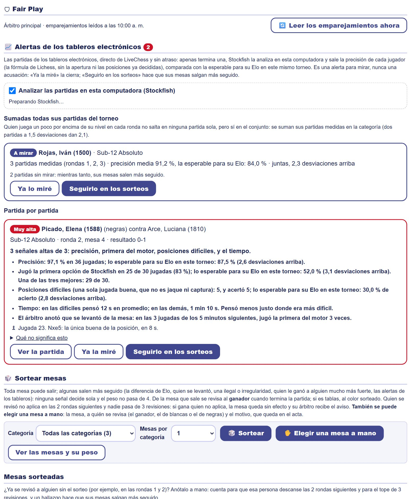
Fair Play: una alerta por el conjunto de partidas, una partida con señales altas y el sorteo de mesas.
FIDE · Reglamento antitrampas
Una estadística sola no prueba nada: en un torneo presencial hace falta mucho más para abrir un caso (la revista N.º 18 lo explica). La pestaña sirve para mirar y para revisar mejor, no para sancionar.
La pestaña Transmisión muestra todos los tableros de LiveChess en vivo, con un resumen de los problemas (un tablero desconectado, una posición que no cuadra) y los QR de los encargados de la transmisión.
Segunda parte · La tableta del árbitro
Entrar y la revisión previa
La pantalla del árbitro adjunto es centroamericano-arbitro.html, pensada para una tableta. No pide cuenta ni contraseña.
El árbitro escanea su QR con la cámara y se abre su pantalla. Si no puede, entra a ajedrez-integral.com/m y escribe su código de 8 letras (sin 0, 1, O, I ni L, para no confundirse).
Si el enlace se creó sin nombre, la primera vez pregunta «¿Cómo te llamas?».
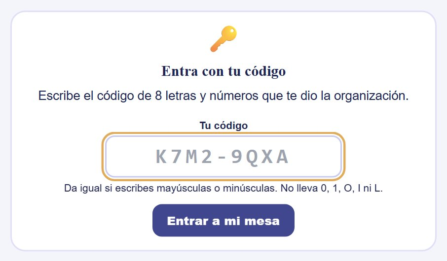
Entrar con el código.
Antes de iniciar la ronda, la tableta pide una revisión previa en dos pasos. Hasta aprobar los dos no se pueden guardar resultados (las ilegales sí):
Los relojes: que cada reloj de sus mesas esté puesto con el ritmo de las bases (en el ejemplo, 90 minutos con 30 segundos de incremento desde la primera jugada) y listo para que arranque el de las blancas. Toca «Sí, revisé los relojes de mis mesas».
Los tableros: bien orientados (casilla blanca a la derecha de cada jugador), con las 32 piezas y todas bien puestas. Toca «Sí, revisé los tableros de mis mesas».
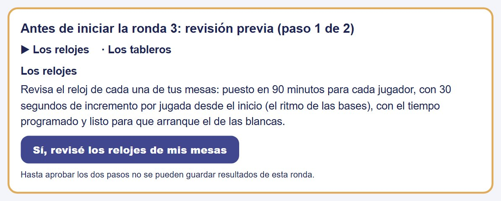
Paso 1 de 2: los relojes.
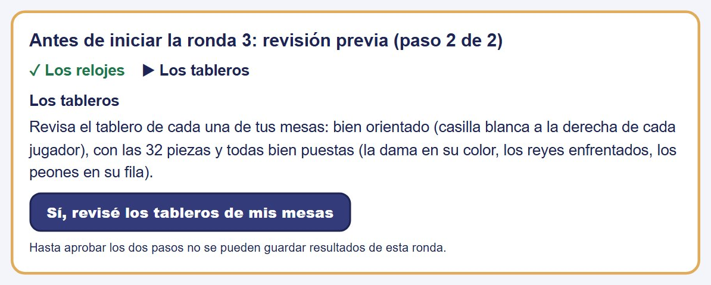
Paso 2 de 2: los tableros.
La tableta del árbitro
El inicio de la ronda, las llegadas y las mesas
Cuando empieza la ronda en su categoría, toca Inició la ronda ahora (o escribe la hora y «Guardar esa hora»). Desde esa hora corre el tiempo de espera.
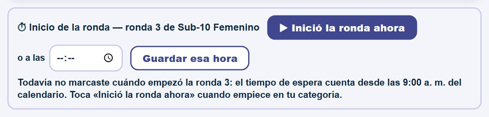
El inicio de la ronda de su categoría.
Marca quién llegó en cada mesa, o todos de una vez con «Marcar que llegaron todos». Arriba dice cuánto falta para que se cumpla el tiempo de espera y cuántos han llegado.
Cuando termina una partida, elige el resultado en su mesa y toca Guardar. La mesa dice «Guardado en chess-results» con la hora: queda como enviado solo cuando chess-results ya lo tiene (con Pareo Integral, cuando lo acepta el principal).
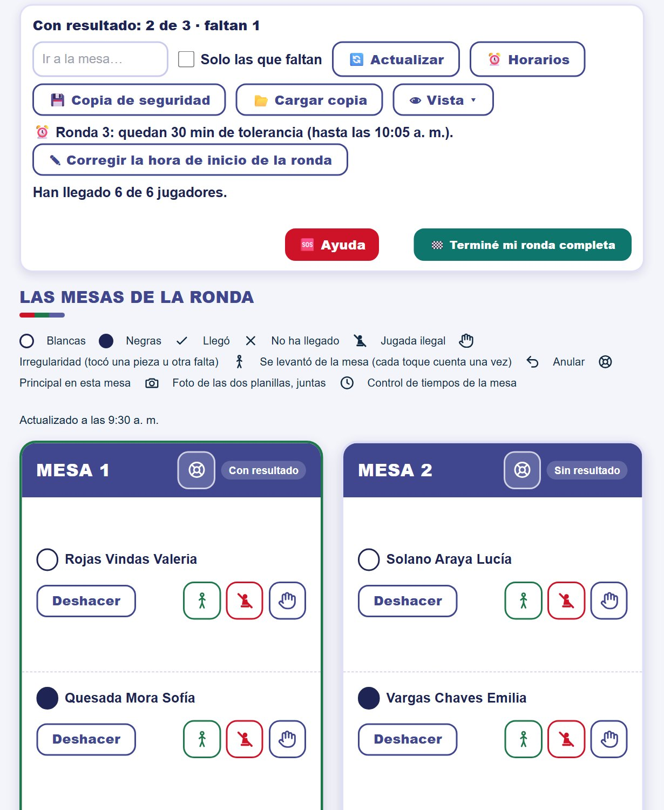
La pantalla del árbitro: la barra con las herramientas, el tiempo de espera, las llegadas y la leyenda de los botones.
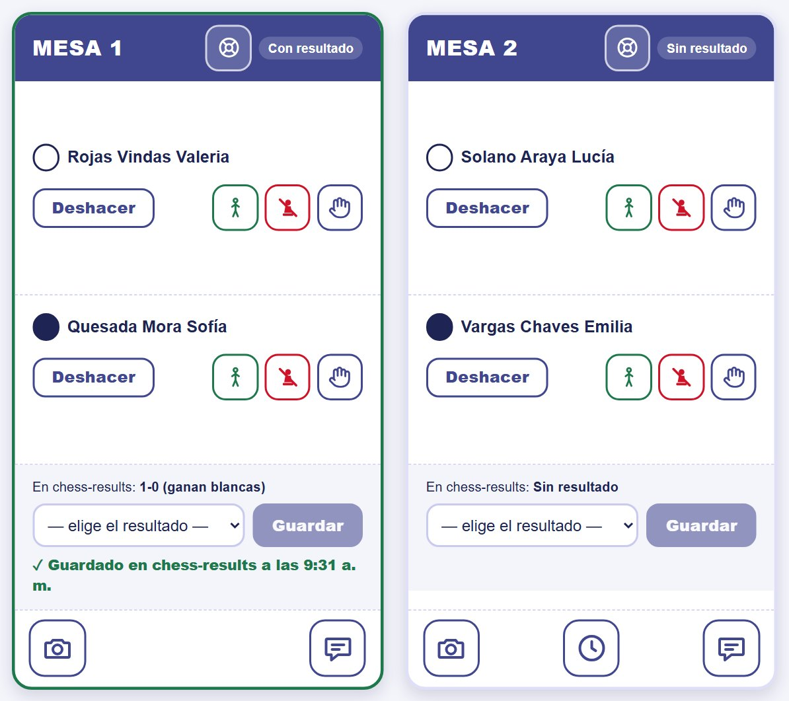
La mesa 1 ya tiene su resultado guardado; la mesa 2 sigue en juego.
En la barra están también Actualizar, Horarios, Copia de seguridad y Cargar copia, la Vista (la de siempre o «tres toques») y, abajo, Ayuda y Terminé mi ronda completa. Cada mesa tiene además el botón de la foto de las planillas, el del control de tiempos y «Hablar con el jugador», con frases en inglés y francés.
La tableta del árbitro
Ilegales, irregularidades y quien se levantó
Junto a cada jugador hay cuatro botones: Llegó, Jugada ilegal, Irregularidad (tocó una pieza u otra falta) y Se levantó de la mesa. Cada toque queda en la bitácora con su hora.
Al tocar Jugada ilegal, la tableta pregunta qué jugada fue (o «Otra», escribiendo qué pasó) y recuerda la regla.
Con «Anotar la ilegal», la mesa queda marcada: «Primera ilegal: 2 min más al rival; con otra, pierde».
Si el mismo jugador completa una segunda ilegal, la tableta pide confirmarlo y propone que pierde la partida.
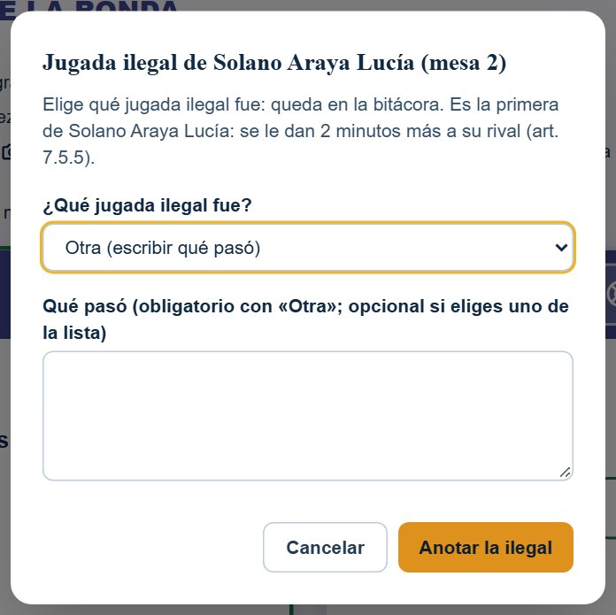
Anotar una jugada ilegal: qué fue y qué pasó.
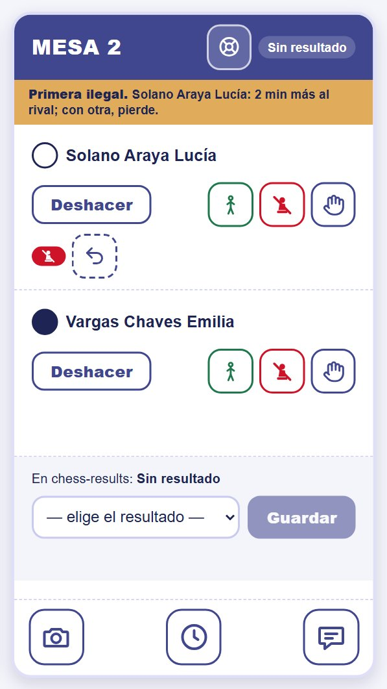
La mesa 2 con la primera ilegal marcada.
Leyes 2023 · art. 7.5.5
Por la primera jugada ilegal completada, el árbitro le da dos minutos más al rival; por la segunda del mismo jugador, la partida se pierde, salvo que el rival no pueda dar mate por ninguna serie de jugadas legales: entonces son tablas. En rápidas y relámpago rigen los Apéndices A y B. La tableta propone; el árbitro decide mirando la posición.
Anular. Si un toque fue un error, «Anular» agrega una línea nueva que lo deja sin efecto. Nada se borra: la bitácora es el acta de lo que pasó en la mesa.
La tableta del árbitro
Avisos, control de tiempos y el final de la ronda
Un aviso del principal aparece arriba de la pantalla, con la hora, y se queda hasta tocar «Entendido».
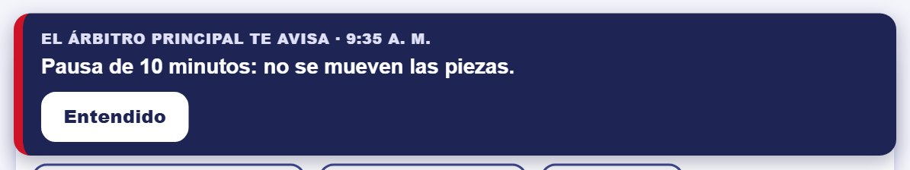
«El árbitro principal te avisa»: pausa de 10 minutos.
Cuando el principal pide un control de tiempos, se abre una ventana: el árbitro elige una partida sin terminar, anota el tiempo y las jugadas de las blancas y de las negras, y toca «Guardar». Si un reloj se apagó, «El reloj se apagó» se lo avisa al principal.
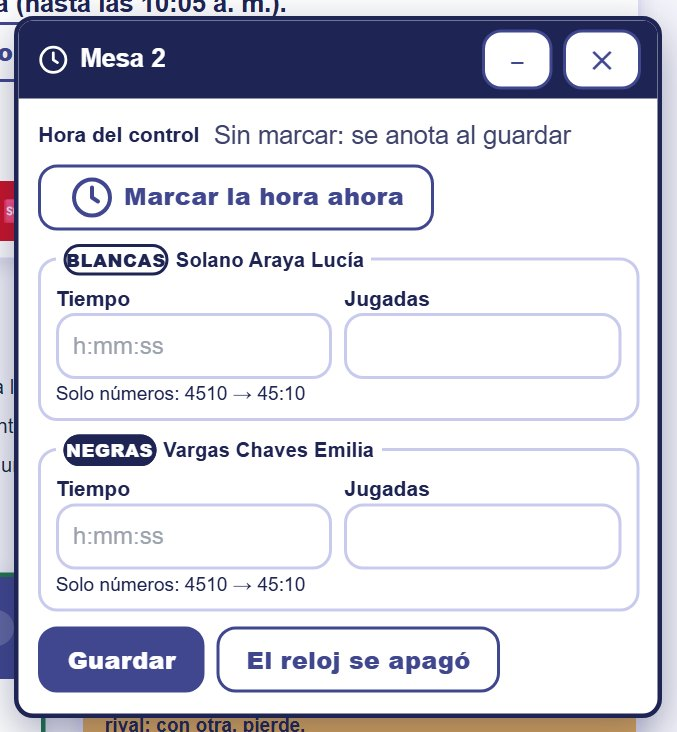
El control de tiempos de la mesa 2.
Terminar la ronda
Con todas sus mesas terminadas, la tableta muestra la revisión final y pide tres confirmaciones antes de «Finalizar la ronda».
Con Terminé mi ronda completa, el principal lo ve en «Ronda en curso» y puede mandarlo a ayudar a otra categoría.
Al final queda su bitácora, que se baja en PDF: «Lo que se ha anotado en tus mesas».
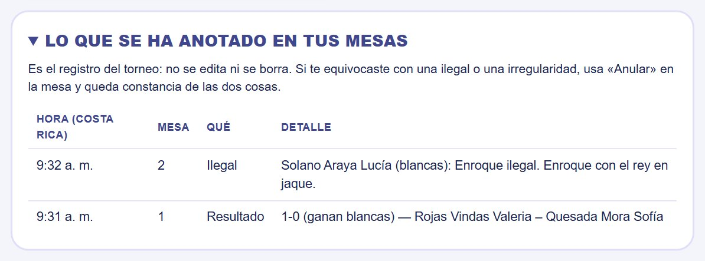
La bitácora del árbitro: la ilegal de la mesa 2 y el resultado de la mesa 1, con su hora.
Sin internet. Si se cae la señal, la tableta guarda lo anotado en una cola y lo manda cuando vuelve; reintentar nunca duplica nada. Con «Copia de seguridad» se baja un archivo con todo, por si la tableta falla.
Lista de control
Un día de campeonato, paso a paso
El principal, antes del evento
Torneos vinculados: la clave del grupo de chess-results o los torneos de Pareo Integral.
Árbitros creados con sus mesas, QR impresos y códigos en papel.
Plano de la sala guardado y el material contado.
Probar todo en Modo ensayo con un torneo de prueba.
Cada ronda
Aviso «Ya empieza la ronda: a sus mesas.».
Cada adjunto: revisión previa, inicio de la ronda y llegadas.
El principal: Ronda en curso abierta, pedidos de ayuda atendidos y los que no llegaron.
Un control de tiempos a media ronda.
Resultados guardados y planillas fotografiadas en cada mesa.
Al terminar: «Terminé mi ronda completa» y revisar que no falte ningún resultado.
Al terminar el día
Planillas en el Drive y una copia de seguridad bajada.
El registro y el informe final en PDF.
Lo que siempre decide el árbitro. Un pedido de ayuda, una sugerencia de reparto, reabrir una ronda, aprobar una mesa del sorteo de Fair Play, el plano antes de publicarlo y el resultado de una segunda ilegal o de una incomparecencia. La herramienta propone; el árbitro firma.
Fuentes de esta edición. La mesa del árbitro, versión del Centroamericano, tal como funciona en noviembre de 2026. Leyes del Ajedrez FIDE, desde el 1-ene-2023 (arts. 6.7, 6.10 y 7.5.5; Apéndices A y B). Reglamento antitrampas de la FIDE. Las jugadoras, los árbitros y el torneo de las capturas son inventados.